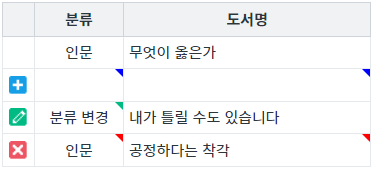

GridView의 셀 단위로 상태를 표시하는 예제입니다. 이 기능은 속성 'cellStatusVisible'을 true로 설정하여 사용할 수 있으며 표시 위치는 속성 'cellStatusIconPosition'에 지정할 수 있습니다.
속성 'cellStatusVisible'과 속성 'cellStatusIconPosition'은 아래의 엔진부터 제공됩니다.
- RC: 5.0_5.4786B.20230106.154957
- GA: 5.0_5.4877A.20230405.131227
셀 단위 상태 표시하지 않기
셀 단위 상태를 우측 상단에 표시하기
셀 단위 상태를 좌측 상단에 표시하기
STEP 1. 초기 상태를 확인합니다.
예제 영역 [(기본 설정) 셀 단위 상태 미표시]에 구성된 GridView를 확인합니다.
GridView에 연결된 DataList 셀의 상태별 아이콘을 확인하기 위해 화면 로딩 후 스크립트(행 추가, 행 삭제, 값 변경)가 작성되었습니다. 데이터의 상태를 식별하기 위해 행 단위 상태 표기 기능이 사용되었습니다.(행 단위별 상태) - 1번째 : 변경 상태 없음 - 2번째 : 로우 추가 상태 - 3번째: '분류' 컬럼의 값이 변경된 상태 - 4번째 : 로우 삭제 상태
STEP 2. 실행된 결과를 확인합니다.
셀에 상태가 표시되지 않습니다.
그림 1.브라우저(Chrome) 실행 예시
STEP 1. 초기 상태를 확인합니다.
예제 영역 [셀 단위 상태를 우측 상단에 표시하기]에 구성된 GridView를 확인합니다.
GridView에 연결된 DataList 셀의 상태별 아이콘을 확인하기 위해 화면 로딩 후 스크립트(행 추가, 행 삭제, 값 변경)가 작성되었습니다. 데이터의 상태를 식별하기 위해 행 단위 상태 표기 기능이 사용되었습니다.(행 단위별 상태) - 1번째 : 변경 상태 없음 - 2번째 : 로우 추가 상태 - 3번째: '분류' 컬럼의 값이 변경된 상태 - 4번째 : 로우 삭제 상태
STEP 2. 실행된 결과를 확인합니다.
셀에 상태 아이콘이 우측 상단에 표시됩니다.
그림 2.브라우저(Chrome) 실행 예시

STEP 1. 초기 상태를 확인합니다.
예제 영역 [셀 단위 상태를 좌측 상단에 표시하기]에 구성된 GridView를 확인합니다.
GridView에 연결된 DataList 셀의 상태별 아이콘을 확인하기 위해 화면 로딩 후 스크립트(행 추가, 행 삭제, 값 변경)가 작성되었습니다. 데이터의 상태를 식별하기 위해 행 단위 상태 표기 기능이 사용되었습니다.(행 단위별 상태) - 1번째 : 변경 상태 없음 - 2번째 : 로우 추가 상태 - 3번째: '분류' 컬럼의 값이 변경된 상태 - 4번째 : 로우 삭제 상태
STEP 2. 실행된 결과를 확인합니다.
셀에 상태 아이콘이 좌측 상단에 표시됩니다.
그림 3.브라우저(Chrome) 실행 예시
STEP1. GridView의 속성을 정의합니다.
[필수] cellStatusVisible="true"
(설정 값)
- false : [default] 셀의 상태(추가/수정/삭제)를 좌측 또는 우측 상단에 아이콘으로 표시합니다.
- true : 셀의 상태(추가/수정/삭제)를 표시하지 않습니다.
[선택] cellStatusIconPosition="right"
(설정 값)
- left : 셀의 상태 아이콘을 좌측 상단에 표시합니다.
- right : [default] 셀의 상태 아이콘을 우측 상단에 표시합니다.
cellStatusVisible
cellStatusIconPosition
GridView - cellStatusVisible & cellStatusIconPosition